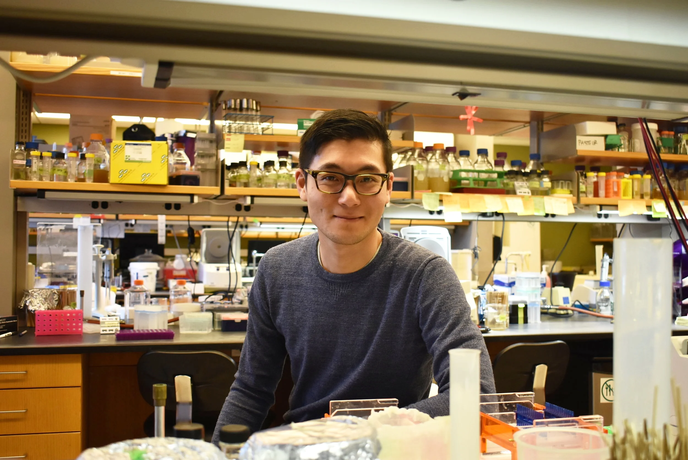

Alumni Profile
Hoong Chuin Lim
Postdoctoral Fellow
Lab dates: 2014 – 2020
I worked on cellular mechanisms that control growth and division in Corynebacterium glutamicum.

Alumni Profile
Postdoctoral Fellow
Lab dates: 2014 – 2020
I worked on cellular mechanisms that control growth and division in Corynebacterium glutamicum.

Postdoctoral Fellow
Senior Scientist, Manifold Biotechnologies
Source: Bernhardt lab records